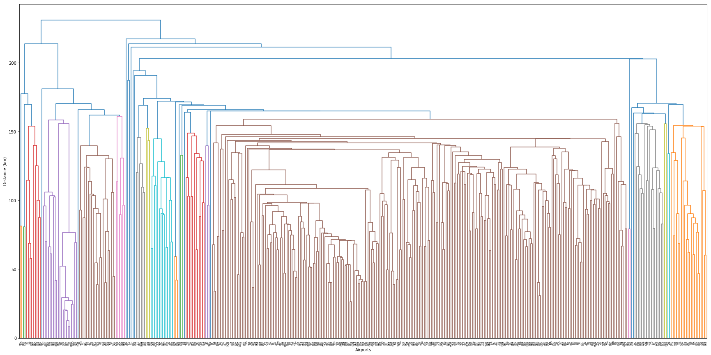

Community detection
Contents
20. Community detection¶
import numpy as np
import matplotlib.pyplot as plt
from scipy.cluster.hierarchy import linkage, dendrogram
%pylab inline
Populating the interactive namespace from numpy and matplotlib
import networkx as nx
import networkx.algorithms.centrality as nc
from operator import itemgetter
import geopy.distance as distance
21. Hierarchical clustering¶
We compute the hierarchical clustering of airport nodes based on their spatial distance
meta_path = "./../datasets/USairport_2010_codes.txt"
nodes={}
labels=[]
finfo = open(meta_path, "r")
for line in finfo.readlines():
s = line.strip().split()
node = int(s[0])
lon = float(s[4])
lat = float(s[3])
nodes[node]=[lon, lat]
labels.append(s[1])
finfo.close()
l=[]
a=list(nodes.keys())
for i in range(0, len(nodes.keys())):
for j in range(0, len(nodes.keys())):
if i<j:
node1=a[i]
node2=a[j]
lat1=nodes[node1][1]
long1=nodes[node1][0]
lat2=nodes[node2][1]
long2=nodes[node2][0]
d=distance.geodesic( (lat1, long1), (lat2, long2)).km
l.append(d)
print( len(l) )
85905
plt.figure(figsize=(30,15))
data_link = linkage(l, method='single') # computing the linkage, this uses the min value
dendrogram(data_link, labels=labels)
plt.xlabel('Airports')
plt.ylabel('Distance (km)')
plt.savefig('./airport_dendrogram.png', bbox_inches='tight', dpi=300)

21.1. The Karate Club¶
This dataset, Zachary’s Karate Club (Zachary, 1977), is historically so important in network science, that NetworkX has even a function to import it!
G = nx.karate_club_graph()
eNum = G.number_of_edges()
nnodes = len(G)
eNum, nnodes
(78, 34)
G.nodes()
NodeView((0, 1, 2, 3, 4, 5, 6, 7, 8, 9, 10, 11, 12, 13, 14, 15, 16, 17, 18, 19, 20, 21, 22, 23, 24, 25, 26, 27, 28, 29, 30, 31, 32, 33))
Note that the nodes are labelled from 0 to 33 while the most common labeling (as shown in Girvan 2002) starts from 1.
pos = nx.spring_layout(G)
plt.figure(figsize=(10,7))
nx.draw_networkx(G, pos)
plt.axis('off')
/Users/Michele/anaconda3/lib/python3.7/site-packages/networkx/drawing/nx_pylab.py:611: MatplotlibDeprecationWarning: isinstance(..., numbers.Number)
if cb.is_numlike(alpha):
(-1.116811224229799,
1.1115920012405156,
-0.8631700636071328,
1.070989447388076)
nx.number_connected_components(G)
1
nc.edge_betweenness(G)
{(0, 1): 0.025252525252525245,
(0, 2): 0.0777876807288572,
(0, 3): 0.02049910873440285,
(0, 4): 0.0522875816993464,
(0, 5): 0.07813428401663694,
(0, 6): 0.07813428401663695,
(0, 7): 0.0228206434088787,
(0, 8): 0.07423959482783014,
(0, 10): 0.0522875816993464,
(0, 11): 0.058823529411764705,
(0, 12): 0.04652406417112298,
(0, 13): 0.04237189825425121,
(0, 17): 0.04012392835922248,
(0, 19): 0.045936960642843,
(0, 21): 0.040123928359222474,
(0, 31): 0.1272599949070537,
(1, 2): 0.023232323232323233,
(1, 3): 0.0077243018419489,
(1, 7): 0.007422969187675069,
(1, 13): 0.01240556828792123,
(1, 17): 0.01869960105254222,
(1, 19): 0.014633732280791102,
(1, 21): 0.01869960105254222,
(1, 30): 0.032280791104320514,
(2, 3): 0.022430184194890075,
(2, 7): 0.025214328155504617,
(2, 8): 0.009175791528732704,
(2, 9): 0.030803836686189627,
(2, 13): 0.007630931160342923,
(2, 27): 0.04119203236850296,
(2, 28): 0.02278244631185807,
(2, 32): 0.06898678663384543,
(3, 7): 0.003365588659706307,
(3, 12): 0.012299465240641705,
(3, 13): 0.01492233256939139,
(4, 6): 0.0047534165181224,
(4, 10): 0.0029708853238265,
(5, 6): 0.0029708853238265003,
(5, 10): 0.0047534165181224,
(5, 16): 0.029411764705882353,
(6, 16): 0.029411764705882353,
(8, 30): 0.00980392156862745,
(8, 32): 0.0304416716181422,
(8, 33): 0.04043657867187279,
(9, 33): 0.029615482556659026,
(13, 33): 0.06782389723566191,
(14, 32): 0.024083977025153497,
(14, 33): 0.03473955238661121,
(15, 32): 0.024083977025153497,
(15, 33): 0.03473955238661121,
(18, 32): 0.024083977025153497,
(18, 33): 0.03473955238661121,
(19, 33): 0.05938233879410351,
(20, 32): 0.024083977025153497,
(20, 33): 0.03473955238661121,
(22, 32): 0.024083977025153493,
(22, 33): 0.03473955238661121,
(23, 25): 0.019776193305605066,
(23, 27): 0.010536739948504653,
(23, 29): 0.00665478312537136,
(23, 32): 0.022341057635175278,
(23, 33): 0.03266983561101209,
(24, 25): 0.0042186571598336305,
(24, 27): 0.018657159833630418,
(24, 31): 0.040106951871657755,
(25, 31): 0.04205783323430383,
(26, 29): 0.004532722179781003,
(26, 33): 0.0542908072319837,
(27, 33): 0.030477039300568713,
(28, 31): 0.0148544266191325,
(28, 33): 0.024564977506153975,
(29, 32): 0.023328523328523323,
(29, 33): 0.029807882749059215,
(30, 32): 0.01705288175876411,
(30, 33): 0.02681436210847975,
(31, 32): 0.04143394731630026,
(31, 33): 0.05339388280564752,
(32, 33): 0.008225108225108224}
21.2. Clustering functions¶
We write two functions that implement the Girvan-Newman algorithm.
First clustering function
def updateGraph1(G):
ebw = nc.edge_betweenness(G)
maxs = 0
for k, v in ebw.items():
if maxs < v:
medge, maxs = k, v
G.remove_edge(medge[0], medge[1])
Second clustering function
def updateGraph2(G):
ebw = nc.edge_betweenness(G)
edge_list = sorted(ebw.items(), key=itemgetter(1))
medge = edge_list[-1][0]
G.remove_edge(medge[0], medge[1])
21.2.1. Find the partition into two communities¶
while nx.is_connected(G):
# we remove links until the graph is connected
updateGraph1(G)
nx.is_connected(G)
False
nx.connected_components(G)
<generator object connected_components at 0x7ff265e92c78>
communities = [i for i in nx.connected_components(G)]
communities
[{0, 1, 3, 4, 5, 6, 7, 10, 11, 12, 13, 16, 17, 19, 21},
{2, 8, 9, 14, 15, 18, 20, 22, 23, 24, 25, 26, 27, 28, 29, 30, 31, 32, 33}]
color_community = []
for i in range(0, len(G)):
if i in communities[0]:
color_community.append(0)
else:
color_community.append(1)
To compare the results to Figure 4 of the paper by Girvan and Newman nodes’ labels must be increased by 1.
H = nx.karate_club_graph()
labels_GN = {}
for i in H:
labels_GN[i] = i + 1
plt.figure(figsize=(10, 8))
nx.draw_networkx(
H,
pos,
labels=labels_GN,
node_color=color_community,
cmap=plt.cm.RdBu,
with_labels=True,
)
/Users/Michele/anaconda3/lib/python3.7/site-packages/networkx/drawing/nx_pylab.py:611: MatplotlibDeprecationWarning: isinstance(..., numbers.Number)
if cb.is_numlike(alpha):